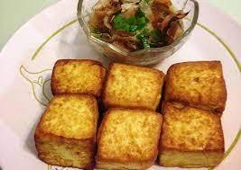
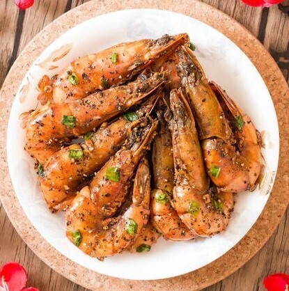

<！DOCTYPE html>
文字+圖片操作
文字+圖片操作 學號91034121 姓名:朱哲輝
老皮嫩肉
老皮嫩肉沒有肉？單看菜名真的會引起大大的誤解！
這個美食其實是來自四川的「豆腐」料理，
經過油炸的豆腐外皮微皺、酥脆，
但內部保持柔軟的口感。
據說這道料理是早期生活不易的窮苦人家想要以豆腐來模仿肉類的口感，
滿足想要吃肉的慾望而製作的解饞美食。
食材
| 1.芙蓉豆腐1盒 |
2.香菜15g |
3.辣椒片15g |
4.醬油15g |
5.水20g |
6.蒜泥15g |
7.蔥花15g |
8.烏醋25g |
9.花椒粉15g |
10.辣油15g |
【做 法】
1.所有調味料拌勻成醬汁備用。
2.將蛋豆腐切成4小塊(3盒共12小塊)。
3.熱鍋，放入可完全蓋過蛋豆腐的油量，預熱至180。C，
再將作法2的蛋豆腐一一放入，
炸至外皮顏色變深後即起鍋、瀝油、裝盤。
4.最後淋上作法1的醬汁再撒上少許香菜即可

胡椒蝦
食材
| 1.泰國蝦1斤 |
2.鹽少許 |
3.味素少許 |
4.胡椒粉少許 |
5.肉桂粉少許 |
6.辣椒粉少許 |
7.米酒適量 |
【做 法】
1.將胡椒粉、辣椒粉、肉桂粉、
2.鹽、味素、酒放入鼎中攪拌，加入蝦子，加熱沸騰後，
3.攪拌均勻瀝乾、刮渣，關小火烘乾即可
